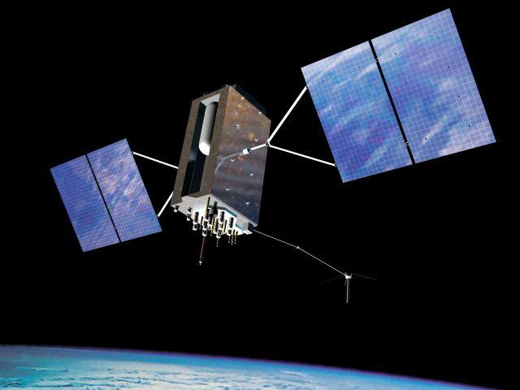

Maps and Accuracy

GPS attempts to achieve a high level of accuracy, but there are many factors that can affect the accuracy of GPS signals. Most survey-grade receivers use two GPS radio frequencies, L1 and L2, but civilians are limited to one frequency (L1). Modernization attempts to add a civilian L2 frequency to improve accuracy, but it is not yet widely available.
How Accurate is GPS?
GPS accuracy depends on several factors, including receiver quality, satellite geometry, signal blockage, atmospheric conditions, and the number of satellites in view. Smartphones can be accurate to about 16 feet in open sky, but worsens in buildings. High-end GPS receivers can be accurate to a few centimeters, with long-term measurements being within millimeters.
Military GPS
The military using two frequencies allow improved accuracy by correcting signal distortions caused by the ionosphere. The military grade receivers can be purchased, but are limited to professional use.
Does the Military Degrade Civilian Accuracy?
No, contrary to popular folklore, the military does not intentionally degrade civilian GPS accuracy. The military did implore selective availability in the past, but it was discontinued in 2000.